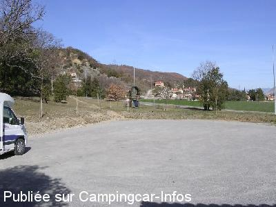
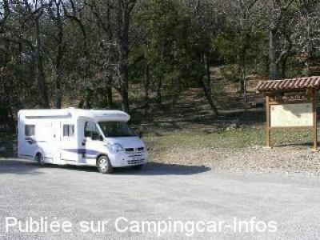

APN = Parking toléré jour/nuit de :
PEIPIN
(N° 632)
Accès/adresse :
Chemin d'Aubignosc / Route de Château-Amoux
04200 PEIPIN
04200 PEIPIN
Latitude : (Nord) 44.13758° Décimaux ou 44° 8′ 15′′
Longitude : (Est) 5.96121° Décimaux ou 5° 57′ 40′′
Tarif : Gratuit
Services :
Autres informations :

Le 14/03/2008 par Franck26

Le 14/03/2008 par Franck26
de
Franck26
le 12/03/2008 :
Cette aire se trouve à un carrefour et à partir de 8h elle est bruyante car il y a de la circulation.
Cette aire se trouve à un carrefour et à partir de 8h elle est bruyante car il y a de la circulation.